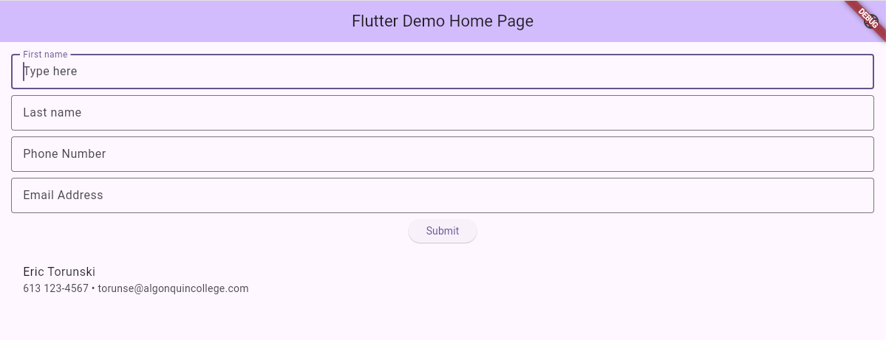

Create a new branch in your lab project for Week6. It can be a branch splitting off from main or any other week because you will be creating a whole new page from what was done previously.
You should go over the notes for this week's materials as well as the sample code provided. For this week's lab, you will demonstrate to your lab professor your knowledge of ListViews:
Create a "Contact List" list application that reuses the TextFields from Lab 5. However you don't need the Phone, SMS, or Email buttons email. Just keep the 4 TextFields. Below those, add an "Enter" button to add the elements into the list.

You should create your own ListPage() function to implement this component and return it, as shown in class.
Each ListTile item should have the First and Last name as the Title, and the Phone number and Email address as Text in the Subtitle row. If the number of items is empty, then you should instead show a Text saying "There are no contacts in the list".